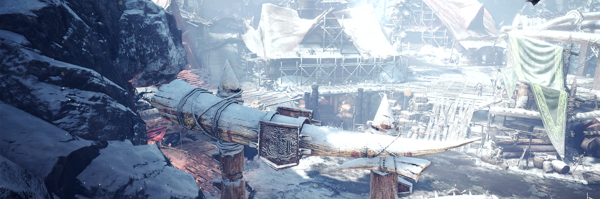
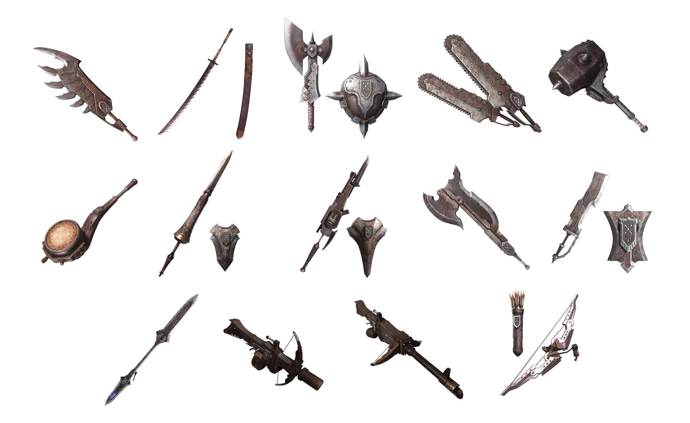
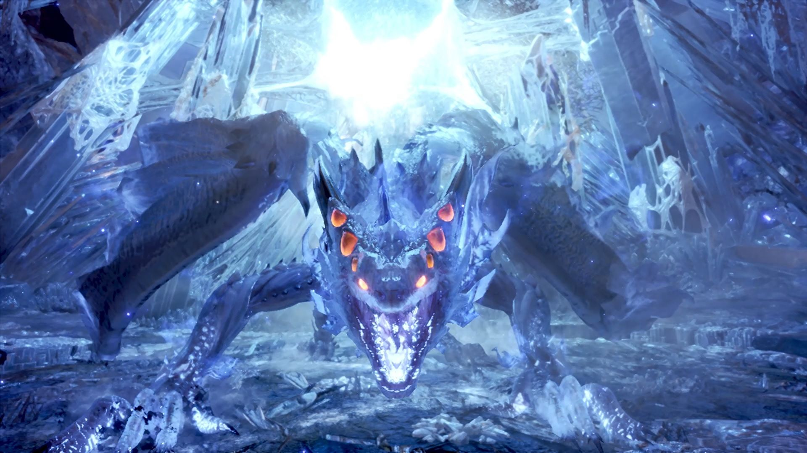

Monster Hunter World: Iceborne

What is Monster Hunter: World exactly?
Monster Hunter: World is an action role-playing game developed and published by Capcom and the fifth mainline installment in the Monster Hunter series.
It was released worldwide for PlayStation 4 and Xbox One in January 2018, with a Microsoft Windows version following in August 2018. In the game,
the player takes the role of a Hunter, tasked to hunt down and either kill or trap monsters that roam in one of several environmental spaces.
If successful, the player is rewarded through loot consisting of parts from the monster and other elements that are used to craft weapons and armor,amongst other equipment.
The game's core loop has the player crafting appropriate gear to be able to hunt down more difficult monsters,which in turn provide parts that lead to more powerful gear.
Players may hunt alone or in a group of up to four players via the game's online multiplayer.
A DLC expansion pack, subtitled Iceborne, was released for home consoles in September 2019 and for Windows in January 2020,
and reached over 7.7 million sales by As of March 2021.
Gameplay
Monster Hunter: World is an action role-playing game played from a third-person perspective.
Similar to previous games in the series, the player takes the role of a player-created character who travels to the "New World",
an unpopulated landmass filled with monsters, to join the Research Commission that studies the land from their central command base of Astera.
The Research Commission tasks the Hunter to hunt down and either kill or capture large monsters that roam outside Astera to both protect the Commission and to study the monsters there.
The player's character does not have any intrinsic attributes, but instead these are determined by what equipment the character is equipped with.
This includes a weapon, selected from the series' fourteen archetypes (such as long sword, bow, or hammer),
which then further defines the types of combat moves and abilities the player can use, and pieces of armor, which can lead to beneficial or detrimental combat skills if matched properly.
While some basic equipment can be purchased using in-game money, most equipment is built from loot obtained by slaying or trapping monsters, rewards from completing quests, or items gathered while in the field.
This creates a core loop of gameplay that has the player fight monsters they can beat to obtain the right loot to craft improved weapons and armor to allow them to face more powerful monsters and the potential for even better equipment.

Story
The player controls a hunter that they can name, supported by an assistant handler, and a palico who are a part of the Fifth Fleet which has been summoned by the Research Commission to provide more support to the New World. A particular focus of the Expedition is to study Elder Dragons, powerful beasts that can affect entire ecosystems, and why they migrate to the New World every ten years in an event known as the Elder Crossing. While traveling to the New World, the Fifth Fleet encounters Zorah Magdaros, a massive volcanic-turtle like Elder Dragon the size of a mountain. After being rescued and arriving at the base camp, known as Astera, the Hunter and their Handler undertake various tasks to explore the area and study Zorah Magdaros at the behest of the Commander of the Expedition. The Expedition determines that Zorah Magdaros is dying and is migrating to a massive graveyard, known as the Rotten Vale. An Expedition-led capture mission against Zorah Magdaros is foiled by Nergigante, a spiked Elder Dragon that feeds on other Elder Dragons, and is protecting Zorah Magdaros as its future meal. After escaping the ambush, Zorah Magdaros unexpectedly enters the Everstream, a massive underground river that runs under the entire New World, rather than traveling to the Rotten Vale. After further investigations, the Expedition learns that if Zorah Magdaros dies within the Everstream, its released bio-energy will destroy the New World. With no time to evacuate, the Expedition develops an emergency plan to intercept Zorah Magdaros and drive it to the ocean, where its released bio-energy will form a new aquatic ecosystem. Nergigante once again interferes, but this time is driven off by the Hunters, and Zorah Magdaros is successfully driven into the ocean.
However, when Nergigante flees to the Elder's Recess, a volcanic environment covered in the crystallized bioenergy of Elder Dragons, the presence of Nergigante drives away its Elder Dragon prey toward neighboring locations, upsetting each individual ecosystem. With the help of the Admiral, the true leader of the Expedition, the Hunter is able to track down and kill Nergigante. With Nergigante dead, the Elder Dragons calm down and return to the Recess. After their defeat by the Hunter, the source of energy within the Elder's Recess is discovered: Xeno'jiiva, an infant, but yet highly dangerous Elder Dragon, which had been incubating within the Elder's Recess, and was feeding on the bio-energy of dead Elder Dragons. Xeno'jiiva hatches upon being discovered, and at the behest of the Admiral, the Hunter kills it before it can wreak havoc on the world. With the Elder Crossing now fully understood, the Expedition is considered finished, but members are offered the chance to stay in the New World to continue their research.

Készítette: Flórika Barnabás